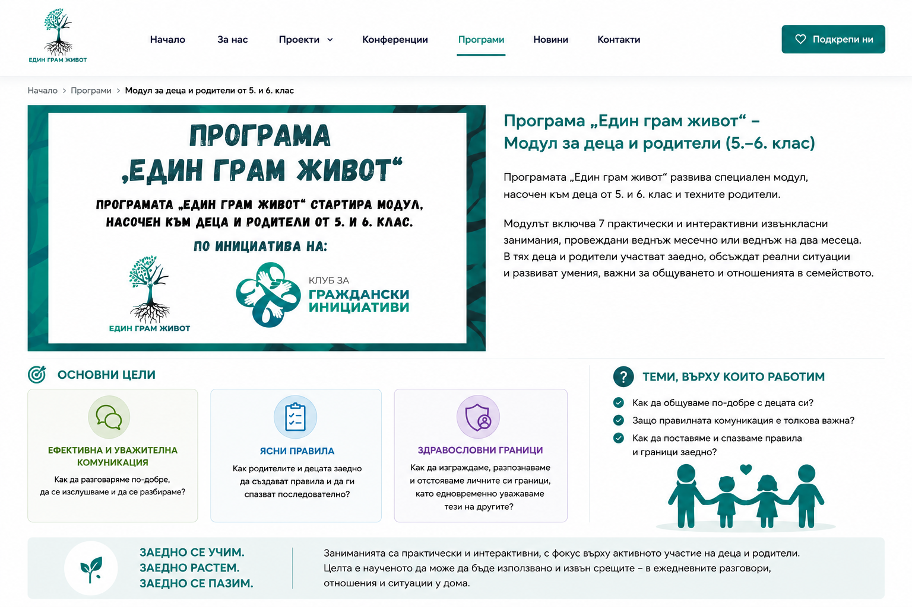

1
Effective and respectful communication
How can we communicate better, listen to one another and understand each other?
A practical and interactive module focused on developing better communication, clear rules and healthy boundaries within the family.
← Back to all programs
The “One Gram of Life” program includes a dedicated module for children in grades 5 and 6 and their parents. It consists of 7 practical and interactive extracurricular sessions, held once a month or once every two months.
The module is designed for children in grades 5 and 6 and their parents. Children and parents participate together, discuss real situations and develop skills that matter for communication and family relationships.
The sessions are practical and interactive, with a focus on active participation by children and parents.
The format is not built as a traditional lecture. Participants work through conversations, tasks, situations and exercises that can also be applied in everyday life.
How can we communicate better, listen to one another and understand each other?
How can parents and children create rules together and follow them consistently?
How can we build, recognize and protect our personal boundaries while respecting those of others?
How can we communicate better with our children?
Why is good communication so important?
How can we set and follow rules and boundaries together?
The format is designed so that children and parents are not just listeners but active participants in the sessions.
The goal is for what is learned to be used beyond the meetings — in everyday conversations, relationships and situations at home.